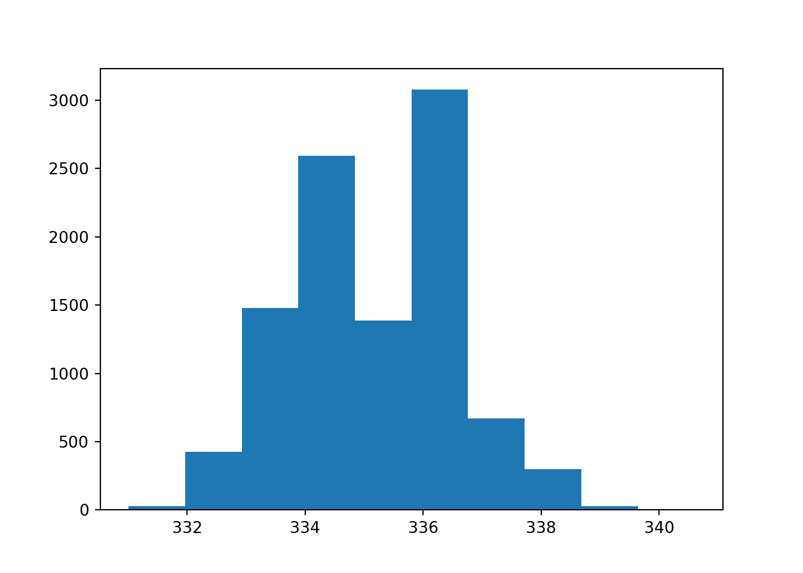
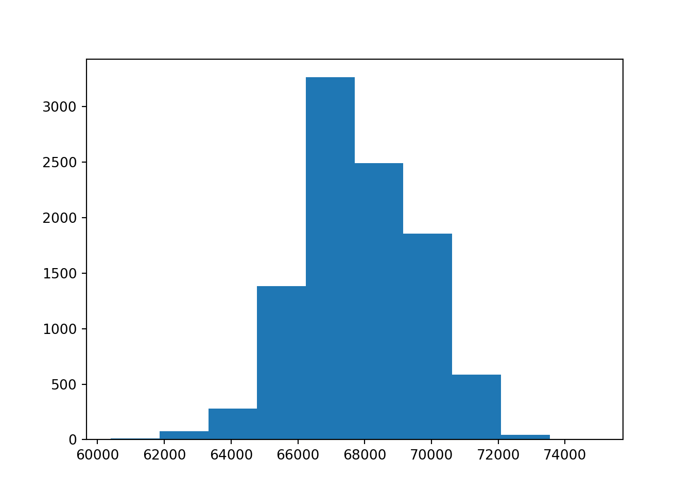

Chapter 3 Decision Trees
We will now discuss decision tree. Two of the most popular algorithms in R is rpart and partykit. We will fist focus on classification trees (response variable is categorical). The data in the code below uses the breast cancer data set from the UCI repository.
3.1 Classification Trees
###Classification
### Get training and test data
set.seed(7515)
perm=sample(1:699)
BC_randomOrder=BCdata[perm,]
train = BC_randomOrder[1:floor(0.75*699),]
test = BC_randomOrder[(floor(0.75*699)+1):699,]
BC.tree = rpart(Target ~ . - ID, data=train, method='class',
parms = list(split='gini')) ## or 'information'
summary(BC.tree)## Call:
## rpart(formula = Target ~ . - ID, data = train, method = "class",
## parms = list(split = "gini"))
## n= 524
##
## CP nsplit rel error xerror xstd
## 1 0.79781421 0 1.00000000 1.0000000 0.05963291
## 2 0.07650273 1 0.20218579 0.2622951 0.03608339
## 3 0.01639344 2 0.12568306 0.1693989 0.02951125
## 4 0.01000000 4 0.09289617 0.1639344 0.02906079
##
## Variable importance
## Size Shape Normal Chromatin Epithelial Margin CT
## 22 18 16 15 14 13 2
## Bare
## 1
##
## Node number 1: 524 observations, complexity param=0.7978142
## predicted class=0 expected loss=0.3492366 P(node) =1
## class counts: 341 183
## probabilities: 0.651 0.349
## left son=2 (360 obs) right son=3 (164 obs)
## Primary splits:
## Size < 3.5 to the left, improve=169.5227, (0 missing)
## Shape < 3.5 to the left, improve=164.4060, (0 missing)
## Bare < 2.5 to the left, improve=152.7409, (10 missing)
## Epithelial < 2.5 to the left, improve=148.5429, (0 missing)
## Normal < 2.5 to the left, improve=146.2118, (0 missing)
## Surrogate splits:
## Shape < 3.5 to the left, agree=0.933, adj=0.787, (0 split)
## Epithelial < 3.5 to the left, agree=0.889, adj=0.646, (0 split)
## Chromatin < 3.5 to the left, agree=0.889, adj=0.646, (0 split)
## Normal < 2.5 to the left, agree=0.874, adj=0.598, (0 split)
## Margin < 3.5 to the left, agree=0.868, adj=0.579, (0 split)
##
## Node number 2: 360 observations, complexity param=0.07650273
## predicted class=0 expected loss=0.07777778 P(node) =0.6870229
## class counts: 332 28
## probabilities: 0.922 0.078
## left son=4 (334 obs) right son=5 (26 obs)
## Primary splits:
## Normal < 3.5 to the left, improve=26.79691, (0 missing)
## Bare < 6 to the left, improve=24.86222, (7 missing)
## CT < 6.5 to the left, improve=23.10046, (0 missing)
## Shape < 3.5 to the left, improve=16.21263, (0 missing)
## Chromatin < 3.5 to the left, improve=15.47227, (0 missing)
## Surrogate splits:
## Shape < 4.5 to the left, agree=0.944, adj=0.231, (0 split)
## CT < 6.5 to the left, agree=0.942, adj=0.192, (0 split)
## Chromatin < 3.5 to the left, agree=0.942, adj=0.192, (0 split)
## Margin < 3.5 to the left, agree=0.939, adj=0.154, (0 split)
## Epithelial < 4.5 to the left, agree=0.936, adj=0.115, (0 split)
##
## Node number 3: 164 observations
## predicted class=1 expected loss=0.05487805 P(node) =0.3129771
## class counts: 9 155
## probabilities: 0.055 0.945
##
## Node number 4: 334 observations, complexity param=0.01639344
## predicted class=0 expected loss=0.0239521 P(node) =0.6374046
## class counts: 326 8
## probabilities: 0.976 0.024
## left son=8 (308 obs) right son=9 (26 obs)
## Primary splits:
## Bare < 2.5 to the left, improve=4.531640, (7 missing)
## Epithelial < 2.5 to the left, improve=2.685889, (0 missing)
## Shape < 2.5 to the left, improve=2.202471, (0 missing)
## CT < 5.5 to the left, improve=1.850413, (0 missing)
## Size < 1.5 to the left, improve=1.583809, (0 missing)
## Surrogate splits:
## CT < 6.5 to the left, agree=0.927, adj=0.077, (7 split)
## Margin < 7.5 to the left, agree=0.927, adj=0.077, (0 split)
## Epithelial < 5.5 to the left, agree=0.927, adj=0.077, (0 split)
##
## Node number 5: 26 observations
## predicted class=1 expected loss=0.2307692 P(node) =0.04961832
## class counts: 6 20
## probabilities: 0.231 0.769
##
## Node number 8: 308 observations
## predicted class=0 expected loss=0 P(node) =0.5877863
## class counts: 308 0
## probabilities: 1.000 0.000
##
## Node number 9: 26 observations, complexity param=0.01639344
## predicted class=0 expected loss=0.3076923 P(node) =0.04961832
## class counts: 18 8
## probabilities: 0.692 0.308
## left son=18 (16 obs) right son=19 (10 obs)
## Primary splits:
## CT < 3.5 to the left, improve=7.876923, (0 missing)
## Size < 1.5 to the left, improve=7.438034, (0 missing)
## Shape < 2.5 to the left, improve=7.438034, (0 missing)
## Chromatin < 1.5 to the left, improve=4.923077, (0 missing)
## Epithelial < 2.5 to the left, improve=4.119347, (0 missing)
## Surrogate splits:
## Size < 1.5 to the left, agree=0.923, adj=0.8, (0 split)
## Shape < 1.5 to the left, agree=0.923, adj=0.8, (0 split)
## Epithelial < 2.5 to the left, agree=0.808, adj=0.5, (0 split)
## Chromatin < 1.5 to the left, agree=0.808, adj=0.5, (0 split)
## Margin < 2.5 to the left, agree=0.769, adj=0.4, (0 split)
##
## Node number 18: 16 observations
## predicted class=0 expected loss=0 P(node) =0.03053435
## class counts: 16 0
## probabilities: 1.000 0.000
##
## Node number 19: 10 observations
## predicted class=1 expected loss=0.2 P(node) =0.01908397
## class counts: 2 8
## probabilities: 0.200 0.800print(BC.tree)## n= 524
##
## node), split, n, loss, yval, (yprob)
## * denotes terminal node
##
## 1) root 524 183 0 (0.65076336 0.34923664)
## 2) Size< 3.5 360 28 0 (0.92222222 0.07777778)
## 4) Normal< 3.5 334 8 0 (0.97604790 0.02395210)
## 8) Bare< 2.5 308 0 0 (1.00000000 0.00000000) *
## 9) Bare>=2.5 26 8 0 (0.69230769 0.30769231)
## 18) CT< 3.5 16 0 0 (1.00000000 0.00000000) *
## 19) CT>=3.5 10 2 1 (0.20000000 0.80000000) *
## 5) Normal>=3.5 26 6 1 (0.23076923 0.76923077) *
## 3) Size>=3.5 164 9 1 (0.05487805 0.94512195) *BC.tree$variable.importance## Size Shape Normal Chromatin Epithelial Margin CT
## 175.82429 145.82955 128.09709 118.66130 116.94858 105.82111 13.37876
## Bare
## 4.53164varimp.data=data.frame(BC.tree$variable.importance)
varimp.data$names=as.character(rownames(varimp.data))
ggplot(data=varimp.data,aes(x=names,y=BC.tree.variable.importance))+geom_bar(stat="identity")+coord_flip()+labs(x="Variable Name",y="Variable Importance")
tscores = predict(BC.tree,type='class')
scores = predict(BC.tree, test, type='class')
##Training misclassification rate:
sum(tscores!=train$Target)/nrow(train)## [1] 0.03244275### Test data:
sum(scores!=test$Target)/nrow(test)## [1] 0.05714286rpart.plot(BC.tree)
3.2 Regression Trees
The code below illustrates regression trees on a version of the bodyfat data set.
###Regression
set.seed(13172) # Set Seed so that same sample can be reproduced in future also
# Now Selecting 75% of data as sample from total 'n' rows of the data
sample <- sample.int(n = nrow(bodyfat), size = floor(.75*nrow(bodyfat)), replace = F)
train <- bodyfat[sample, ]
test <- bodyfat[-sample, ]
body_model<-rpart(DEXfat ~ age + waistcirc + hipcirc +
elbowbreadth + kneebreadth, data = train,
control = rpart.control(minsplit = 10))
summary(body_model)
## Call:
## rpart(formula = DEXfat ~ age + waistcirc + hipcirc + elbowbreadth +
## kneebreadth, data = train, control = rpart.control(minsplit = 10))
## n= 53
##
## CP nsplit rel error xerror xstd
## 1 0.67492210 0 1.00000000 1.0387549 0.19298200
## 2 0.12397892 1 0.32507790 0.3674702 0.09713363
## 3 0.06337174 2 0.20109898 0.3207674 0.07055438
## 4 0.04539485 3 0.13772723 0.3298414 0.07030078
## 5 0.01311181 4 0.09233238 0.2635804 0.07215928
## 6 0.01000000 5 0.07922057 0.2502471 0.06967234
##
## Variable importance
## waistcirc hipcirc kneebreadth elbowbreadth age
## 30 25 25 11 9
##
## Node number 1: 53 observations, complexity param=0.6749221
## mean=31.98226, MSE=126.5508
## left son=2 (25 obs) right son=3 (28 obs)
## Primary splits:
## waistcirc < 86.5 to the left, improve=0.6749221, (0 missing)
## hipcirc < 109.25 to the left, improve=0.6400649, (0 missing)
## kneebreadth < 9.35 to the left, improve=0.4913650, (0 missing)
## age < 37 to the left, improve=0.1897384, (0 missing)
## elbowbreadth < 6.55 to the left, improve=0.1514361, (0 missing)
## Surrogate splits:
## hipcirc < 107.85 to the left, agree=0.887, adj=0.76, (0 split)
## kneebreadth < 9.35 to the left, agree=0.849, adj=0.68, (0 split)
## elbowbreadth < 6.55 to the left, agree=0.679, adj=0.32, (0 split)
## age < 37 to the left, agree=0.660, adj=0.28, (0 split)
##
## Node number 2: 25 observations, complexity param=0.04539485
## mean=22.2016, MSE=24.60555
## left son=4 (11 obs) right son=5 (14 obs)
## Primary splits:
## hipcirc < 96.5 to the left, improve=0.49496490, (0 missing)
## waistcirc < 75.15 to the left, improve=0.43069200, (0 missing)
## age < 31.5 to the left, improve=0.33752490, (0 missing)
## kneebreadth < 8.55 to the left, improve=0.24410760, (0 missing)
## elbowbreadth < 6.65 to the left, improve=0.08933998, (0 missing)
## Surrogate splits:
## waistcirc < 72 to the left, agree=0.76, adj=0.455, (0 split)
## kneebreadth < 8.25 to the left, agree=0.76, adj=0.455, (0 split)
## age < 31.5 to the left, agree=0.72, adj=0.364, (0 split)
## elbowbreadth < 6.45 to the left, agree=0.64, adj=0.182, (0 split)
##
## Node number 3: 28 observations, complexity param=0.1239789
## mean=40.715, MSE=55.90078
## left son=6 (25 obs) right son=7 (3 obs)
## Primary splits:
## kneebreadth < 11.15 to the left, improve=0.53126700, (0 missing)
## hipcirc < 109.9 to the left, improve=0.49501800, (0 missing)
## waistcirc < 106 to the left, improve=0.48547170, (0 missing)
## elbowbreadth < 6.35 to the left, improve=0.18322950, (0 missing)
## age < 64 to the left, improve=0.06033762, (0 missing)
##
## Node number 4: 11 observations, complexity param=0.01311181
## mean=18.26455, MSE=16.37561
## left son=8 (7 obs) right son=9 (4 obs)
## Primary splits:
## age < 56.5 to the left, improve=0.48821750, (0 missing)
## waistcirc < 77.5 to the left, improve=0.37437570, (0 missing)
## hipcirc < 94.1 to the left, improve=0.26063300, (0 missing)
## kneebreadth < 8.55 to the left, improve=0.02392090, (0 missing)
## elbowbreadth < 6.15 to the left, improve=0.02295546, (0 missing)
## Surrogate splits:
## waistcirc < 77.5 to the left, agree=0.818, adj=0.50, (0 split)
## elbowbreadth < 6.55 to the left, agree=0.818, adj=0.50, (0 split)
## hipcirc < 91.5 to the right, agree=0.727, adj=0.25, (0 split)
##
## Node number 5: 14 observations
## mean=25.295, MSE=9.323925
##
## Node number 6: 25 observations, complexity param=0.06337174
## mean=38.8272, MSE=23.49564
## left son=12 (11 obs) right son=13 (14 obs)
## Primary splits:
## hipcirc < 109.9 to the left, improve=0.72361790, (0 missing)
## waistcirc < 98.75 to the left, improve=0.46229770, (0 missing)
## elbowbreadth < 6.35 to the left, improve=0.24168590, (0 missing)
## kneebreadth < 9.9 to the left, improve=0.22697980, (0 missing)
## age < 60.5 to the left, improve=0.03275597, (0 missing)
## Surrogate splits:
## waistcirc < 98.75 to the left, agree=0.84, adj=0.636, (0 split)
## elbowbreadth < 6.45 to the left, agree=0.76, adj=0.455, (0 split)
## kneebreadth < 8.75 to the left, agree=0.68, adj=0.273, (0 split)
## age < 49.5 to the right, agree=0.60, adj=0.091, (0 split)
##
## Node number 7: 3 observations
## mean=56.44667, MSE=48.76009
##
## Node number 8: 7 observations
## mean=16.12714, MSE=8.875049
##
## Node number 9: 4 observations
## mean=22.005, MSE=7.515725
##
## Node number 12: 11 observations
## mean=34.17545, MSE=7.173207
##
## Node number 13: 14 observations
## mean=42.48214, MSE=5.959931
printcp(body_model)
##
## Regression tree:
## rpart(formula = DEXfat ~ age + waistcirc + hipcirc + elbowbreadth +
## kneebreadth, data = train, control = rpart.control(minsplit = 10))
##
## Variables actually used in tree construction:
## [1] age hipcirc kneebreadth waistcirc
##
## Root node error: 6707.2/53 = 126.55
##
## n= 53
##
## CP nsplit rel error xerror xstd
## 1 0.674922 0 1.000000 1.03875 0.192982
## 2 0.123979 1 0.325078 0.36747 0.097134
## 3 0.063372 2 0.201099 0.32077 0.070554
## 4 0.045395 3 0.137727 0.32984 0.070301
## 5 0.013112 4 0.092332 0.26358 0.072159
## 6 0.010000 5 0.079221 0.25025 0.069672
body_model2<-prune(body_model,cp=0.05175731)
printcp(body_model2)
##
## Regression tree:
## rpart(formula = DEXfat ~ age + waistcirc + hipcirc + elbowbreadth +
## kneebreadth, data = train, control = rpart.control(minsplit = 10))
##
## Variables actually used in tree construction:
## [1] hipcirc kneebreadth waistcirc
##
## Root node error: 6707.2/53 = 126.55
##
## n= 53
##
## CP nsplit rel error xerror xstd
## 1 0.674922 0 1.00000 1.03875 0.192982
## 2 0.123979 1 0.32508 0.36747 0.097134
## 3 0.063372 2 0.20110 0.32077 0.070554
## 4 0.051757 3 0.13773 0.32984 0.070301
varimp.data=data.frame(body_model2$variable.importance)
varimp.data$names=as.character(rownames(varimp.data))
ggplot(data=varimp.data,aes(x=names,y=body_model2.variable.importance))+geom_bar(stat="identity")+coord_flip()+labs(x="Variable Name",y="Variable Importance")
tscores = predict(body_model2,type='vector')
scores = predict(body_model2, test, type='vector')
##Training measures:
mean(abs(tscores-train$DEXfat))
## [1] 3.338013
mean(abs((tscores-train$DEXfat)/train$DEXfat))
## [1] 0.1357316
### Test data:
mean(abs(scores-test$DEXfat))
## [1] 5.622164
mean(abs((scores-test$DEXfat)/test$DEXfat))
## [1] 0.2492064
rpart.plot(body_model2)
rsq.rpart(body_model2)
##
## Regression tree:
## rpart(formula = DEXfat ~ age + waistcirc + hipcirc + elbowbreadth +
## kneebreadth, data = train, control = rpart.control(minsplit = 10))
##
## Variables actually used in tree construction:
## [1] hipcirc kneebreadth waistcirc
##
## Root node error: 6707.2/53 = 126.55
##
## n= 53
##
## CP nsplit rel error xerror xstd
## 1 0.674922 0 1.00000 1.03875 0.192982
## 2 0.123979 1 0.32508 0.36747 0.097134
## 3 0.063372 2 0.20110 0.32077 0.070554
## 4 0.051757 3 0.13773 0.32984 0.070301

###Another nice plot
fancyRpartPlot(body_model2, uniform=TRUE)
##Can also visualize the cp values
plotcp(body_model)
3.3 Recursive partitioning with partykit
### Classification example:
set.seed(7515)
perm=sample(1:699)
BC_randomOrder=BCdata[perm,]
train = BC_randomOrder[1:floor(0.75*699),]
model1=ctree(Target ~ . - ID, data=train)
model1##
## Model formula:
## Target ~ CT + Size + Shape + Margin + Epithelial + Bare + Chromatin +
## Normal + Mitoses
##
## Fitted party:
## [1] root
## | [2] Shape <= 3
## | | [3] Bare <= 5
## | | | [4] Size <= 2
## | | | | [5] Bare <= 2: 0.000 (n = 289, err = 0.0)
## | | | | [6] Bare > 2
## | | | | | [7] CT <= 2: 0.000 (n = 9, err = 0.0)
## | | | | | [8] CT > 2: 0.200 (n = 10, err = 1.6)
## | | | [9] Size > 2
## | | | | [10] Normal <= 3: 0.062 (n = 16, err = 0.9)
## | | | | [11] Normal > 3: 0.714 (n = 7, err = 1.4)
## | | [12] Bare > 5: 0.889 (n = 18, err = 1.8)
## | [13] Shape > 3
## | | [14] Size <= 4
## | | | [15] CT <= 5
## | | | | [16] Margin <= 3: 0.083 (n = 12, err = 0.9)
## | | | | [17] Margin > 3: 0.778 (n = 9, err = 1.6)
## | | | [18] CT > 5: 0.963 (n = 27, err = 1.0)
## | | [19] Size > 4: 0.984 (n = 127, err = 2.0)
##
## Number of inner nodes: 9
## Number of terminal nodes: 10plot(model1)
###Regression example:
set.seed(13172)
sample <- sample.int(n = nrow(bodyfat), size = floor(.75*nrow(bodyfat)), replace = F)
train <- bodyfat[sample, ]
model1<-ctree(DEXfat ~ age + waistcirc + hipcirc + elbowbreadth +
kneebreadth, data = train)
model1##
## Model formula:
## DEXfat ~ age + waistcirc + hipcirc + elbowbreadth + kneebreadth
##
## Fitted party:
## [1] root
## | [2] waistcirc <= 86
## | | [3] hipcirc <= 96: 18.265 (n = 11, err = 180.1)
## | | [4] hipcirc > 96: 25.295 (n = 14, err = 130.5)
## | [5] waistcirc > 86
## | | [6] hipcirc <= 109.5: 34.175 (n = 11, err = 78.9)
## | | [7] hipcirc > 109.5: 44.946 (n = 17, err = 711.5)
##
## Number of inner nodes: 3
## Number of terminal nodes: 4plot(model1)
### Example for binning data:
churn=read.csv("Q:\\My Drive\\Data Mining\\Data\\tele_churn.csv")
churn$y<-ifelse(churn$churn=="TRUE",1,0)
churn$y<-ordered(churn$y,levels=c(0,1),labels="No","Yes")
model1<-ctree(y~total.day.minutes,data=churn)
model1##
## Model formula:
## y ~ total.day.minutes
##
## Fitted party:
## [1] root
## | [2] total.day.minutes <= 283.9
## | | [3] total.day.minutes <= 245: No1 (n = 2739, err = 3.4%)
## | | [4] total.day.minutes > 245: No1 (n = 216, err = 15.7%)
## | [5] total.day.minutes > 283.9: No2 (n = 49, err = 46.9%)
##
## Number of inner nodes: 2
## Number of terminal nodes: 3plot(model1)
Some interesting extra tidbits!! This shows how to do ROC curves and lift curves for classification trees.
test = BC_randomOrder[(floor(0.75*699)+1):699,]
###Lift (from classification trees)
scores1=predict(BC.tree,test,type="prob")
pred_val <-prediction(scores1[,2],test$Target)
plot(performance(pred_val, measure="lift", x.measure="rpp"), colorize=TRUE)# Calculating True Positive and False Positive Rate
perf_val <- performance(pred_val, "tpr", "fpr")
#Plot the ROC curve
plot(perf_val, col = "green", lwd = 1.5)#Calculating KS statistics
ks1.tree <- max(attr(perf_val, "y.values")[[1]] - (attr(perf_val, "x.values")[[1]]))
ks1.tree## [1] 0.8971412